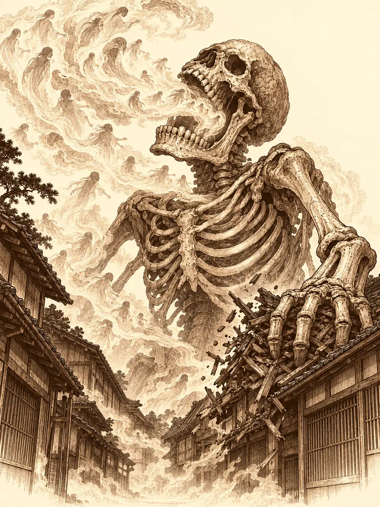

Capítulo 139
Los muertos del Bosque del Infierno
Libro IX · Mareas y muertos
Gluglu paseaba por el boquete de la pared como quien sale a tomar el fresco. Nadie había reconstruido la base desde la tormenta de Shizuka, y el hombre pez globo, muerto y vuelto a levantar tantas veces que ya nadie llevaba la cuenta, había descubierto que por aquel agujero se llegaba a la calle. Archi lo miró con interés científico, sacó una cuerda de entre sus herramientas y le pidió a Ralph, su pequeño ayudante mecánico, que se la atara al tobillo. Después murmuró unas palabras y Gluglu empezó a elevarse, despacio, hasta quedar flotando como un globo de feria. El gnomo lo amarró al respaldo de una silla.
"Quédate aquí, amigo. Aquí te cuidarán".
Guxi acababa de volver del sur y contemplaba la base con los brazos cruzados. Le habría gustado arreglarla, pero no era cazador, y no tenía con qué pagar los materiales. Archi, en cambio, solo había venido a recoger sus cosas: se mudaba a un taller de los bajos fondos que había conseguido con la ayuda de Víctor, un inventor de aquella parte de la ciudad. Al principio fingió que su trabajo con la armadura iba mal, que no había conseguido nada. Guxi lo conocía demasiado bien.
"Mientes".
El gnomo sonrió, sacó una pieza ligera, casi una coraza de viaje, y pronunció dos palabras: "Armadura de combate". Las placas se desplegaron con un chasquido metálico hasta cubrir un cuerpo entero. Guxi se la probó, movió los brazos, la elogió con sinceridad y se la devolvió.
En un rincón, Serafina sobrevivía como podía a la peor resaca de su vida. Había pasado la noche vomitando lo que había bebido en palacio y había vuelto a la base casi a rastras, pero aún le quedaba ánimo para enseñar el anillo que había sacado de los colchones del servicio. Contó también que Danifae estaba presa. Kurobane, de vuelta del sur, quiso preguntarle a Lor Miau qué sabía de ella. El nekomata lo miró, levantó las dos colas e intentó azotarlo con ellas, y Kurobane tuvo que echarse atrás. Detrás de él se oyó un golpe: la magia de Archi se había acabado y Gluglu había caído contra el canto de la silla, con la cabeza abollada y las patas al aire, todavía atado por el tobillo.
El portal crepitó. Unos pasos rápidos cruzaron el pasillo y la puerta se abrió de golpe.
"¡Cazadores! ¡Cazadores!".
Era un cocinero de Ukio al que Guxi conocía. Agarró al artífice de la pechera, sin aliento. Los estaban atacando. No había tiempo de dar la alarma. Miró a Serafina como si calculara cuántas raciones salían de una coneja, y luego echó a correr de vuelta al portal. Guxi le ofreció el brazo a la capitana, que se apoyó en él casi entera, y los cuatro cruzaron.
Al otro lado los recibió un ruido de mercado: voces, mesas arrastradas, niños que lloraban. La vieja base de Ukio estaba llena de refugiados del sur, los que Calista había mandado al norte, e Inugami los ayudaba a cargar fardos. Alguien les explicó, atropellándose, que al oscurecer habían empezado a salir criaturas del bosque: zombis, muertos con armaduras extrañas que nadie había visto nunca, toda clase de monstruos, y que ya estaban dentro del pueblo. La base estaba cerrada, pero un pueblo no se podía cerrar.
Kurobane fue de habitación en habitación mandando a todos a la sala principal, que era la más segura. Guxi le puso a Serafina una mano en la frente y algo del mareo se le fue. Archi aprovechó el revuelo para hacer lo que Banzo le había recomendado: pasó por delante de cada refugiado el detector de yokai, un aparato capaz de desvelar si alguien era una ilusión o una criatura disfrazada. La gente lo miraba con desconfianza, como si el gnomo les estuviera haciendo un retrato. Entre los humanos que revisó no apareció nadie que no fuera lo que parecía.
Salieron a la calle con sigilo. Archi se volvió invisible. En la oscuridad, entre las casas, los defensores de Ukio peleaban contra zombis y esqueletos. Eran viejos conocidos de la taberna, gente que había acompañado a los cazadores en sus primeros encargos: Mufasa, el mago leonino; Cleo, una mediana pelirroja con un hacha más grande que ella; Romu, el enano sanador; Lealín, que sabía transformarse en animales; Zogia, rápida como una gata, y Bill, el arquero elfo. Kurobane entró por un flanco, las torretas de Guxi escupieron fuego y Serafina repartió puñetazos con la resaca como única armadura. Uno a uno, los muertos pequeños fueron cayendo.
Archi, invisible sobre un tejado, miraba más lejos. Al norte del pueblo, a unos doscientos pies, empezaba el Bosque del Infierno, aquel bosque lleno de yokai donde los cazadores habían hecho sus primeras misiones. Por encima de las copas, despacio, se movía algo que no era del bosque: una calavera enorme, más alta que los árboles. Con cada paso, el suelo de Ukio temblaba.
"¡Formación! ¡Algo viene!".
Solo Cleo le hizo caso. Archi esperó a que la criatura asomara a la calle y lanzó una red de hilos pegajosos que la atrapó a medio paso. Era un esqueleto gigantesco, y la red no lo contuvo mucho. Apoyó una mano huesuda en una casa y la mitad del tejado se vino abajo. Luego aspiró, y los cazadores vieron cómo un torbellino de fantasmas se le metía por la boca. Lo que exhaló fue una niebla gris que olía a tumba y que, además de quemar la carne, entraba en la cabeza. Los defensores cayeron como hojas. Los cazadores alcanzados quedaron malheridos.
Guxi curó a una de las defensoras caídas. Serafina le metió una poción en la boca a Romu y se tomó otra ella. Kurobane le dio otra a Zogia y la arrastró fuera del alcance del monstruo. Archi mandó a Ralph a auxiliar a Cleo, y el pequeño constructo llegó hasta ella y la ayudó a levantarse, pero el gigante volvió a golpearla, se inclinó y se tragó a Ralph de un mordisco. Archi vio caer las piezas de su ayudante entre los dientes de la calavera. Algo se le rompió por dentro. Recogió lo que quedaba y se lo disparó al monstruo con una catapulta, piezas de su amigo convertidas en metralla.
Guxi levantó un muro de fuego y se plantó delante cuando llegó el siguiente aliento, hasta que perdió la concentración y el fuego se apagó. Volvió a sembrar torretas. Serafina y Kurobane se apartaban entre las casas para recuperar el aliento y sacar heridos, y volvían a entrar. Entonces el gigante empezó a marcar a sus presas. Una señal se encendió sobre la piel de Serafina y otra sobre la de Guxi, y las manos de hueso los atraparon a los dos.
Serafina descubrió el precio de la marca cuando debería haber caído. No cayó. Siguió en pie, consciente, pero ya no era ella quien decidía. Tenía otro aspecto y unos ojos que no eran suyos. El esqueleto la soltó y le dio una orden, y Serafina se volvió contra Lealín y la golpeó. Guxi, todavía en la otra mano del monstruo, seguía protegiéndola y atacando como podía. Kurobane rodeó la zona, hirió al gigante y también fue marcado y atrapado; envolvió su propio cuerpo en oscuridad y, de un paso, apareció en otro lugar, libre. Serafina, dominada, atacó a Bill y después a Archi. Los defensores que habían vuelto a levantarse volvían a caer, y esta vez algunos no se levantaron.
Archi tenía una runa grabada para casos así. Cuando el monstruo descargó un zarpazo contra él, la activó y desvió el golpe hacia otra criatura de su elección. Eligió a Serafina. El impacto debería haberla matado; la marca no la dejó caer, pero se llevó todo lo que le quedaba, hasta dejarla con un hilo de vida. Y la marca se apagó. Serafina parpadeó, se miró las manos y supo quién era otra vez.
Volvió contra el gigante con toda la rabia que no había podido usar. Le partió hueso con los puños hasta que Kurobane encontró el hueco y lo remató con dos tajos. La mano que sujetaba a Guxi se abrió y el artífice cayó al suelo. El esqueleto no se derrumbó entero, se fue desmontando. Cada pieza que caía, un fémur, una costilla, la calavera, se deshacía al tocar el suelo en cientos de huesos más pequeños, como si el gigante hubiera estado hecho de otros muertos. Al final solo quedó una montaña de huesos en mitad de la calle.
Entre los escombros, varios de sus viejos compañeros de la taberna no respiraban. Guxi desenrolló un pergamino y pronunció en la lengua de los elfos: "Que la vida vuelva a su debido tiempo". Lo usaron todo, y tres volvieron a respirar. Para los demás era tarde: llevaban demasiado tiempo muertos. Mufasa y Cleo estaban entre los que se habían dado por perdidos. Guxi se echó al hombro el brazo de una de las supervivientes y Kurobane ayudó a otra a caminar.

Archi se había acercado a la montaña de huesos con todas sus lentes puestas. Lo que encontró le hizo echarse las gafas hacia atrás y retroceder dos pasos. Había nigromancia, sí, pero no se parecía a la de Gelbreak ni a la de Sirth. Era otra cosa, y le daba miedo. Reunió valor, cogió unas muestras con pinzas y se las dio a Guxi.
"¿Te importaría llevárselas a Sirth?".
"Si lo veo, se las doy".
Serafina se llevó la mano al costado, sacó una botella y la miró a contraluz. Estaba entera.
Esa misma noche, en una celda de la cárcel del shogunato, una araña diminuta salió de entre las juntas de la piedra y se detuvo frente a Danifae, encadenada y amordazada. Empezó a subir por el aire, sin pared que la sostuviera, dejando un hilo de seda que brillaba con un morado oscuro y que se fue abriendo hasta rasgar el espacio. De la grieta brotó una masa de barro que burbujeaba y se fue moldeando hasta tomar la forma de una drow de una belleza exagerada, de pelo blanco. Chasqueó los dedos y la mordaza cayó.
"Danifae, estás tardando demasiado. Lady Lolth espera".
"Estoy en ello".
"¿Encerrada aquí? Deja de jugar con esta gente. Sabes lo que pasará si fracasas. Lady Lolth no acepta errores".
"Cuidado, sirvienta de la Reina Araña. Sabes de lo que soy capaz".
"No si ella te lo impide. Cumple tu cometido, niña".
La figura volvió a hacerse barro y se escurrió por la grieta. A Lady Lolth no le gusta que la hagan esperar. Danifae se quedó en la celda, con las cadenas puestas.
Los días siguientes estuvieron llenos de pequeñas noticias. Kazuki llevó el vial a Koto, un alquimista de bigote enorme que tenía su tienda en la calle principal, junto a la herrería y la capilla. Koto se dio cuenta de que el recipiente no era de cristal, sino de un material ligero y resistente que no conocía, y de que el olor del contenido le resultaba familiar sin saber por qué. Le pidió dos días. Cuando Kazuki le contó que lo habían encontrado en la comida de la shogun, el hombre se alarmó, y más aún al pensar en lo que diría su amiga Tsugami si se enteraba. Más tarde, Kazuki se cruzó con Calista y Gelbreak, que paseaban de incógnito bajo unas capas, y le regaló a la shogun un anillo de ramas doradas y gemas verdes encargado a los artesanos de su plano. No quería comprar su confianza, dijo, solo empezar a reparar un error. Aseguró haber disipado cualquier magia que pudiera llevar, y Calista lo aceptó.
En la base de Sho, Guxi buscó a Sirth para enseñarle los huesos y encontró su cuarto vacío, sin uso desde hacía días. Mientras empezaba a arreglar la pared, apareció Banzo cargado de tablones y con una sorpresa: un collar de los cazadores y un contrato. Guxi dudó. No creía haber limpiado todavía su honor.
"Tus errores no borran lo que quieres a Kuroto", le dijo Banzo.
Guxi firmó el contrato con los ojos húmedos. Después le contó lo de Ukio, y el goliat se enfureció porque nadie le había avisado, con los refugiados allí. Se pusieron a trabajar juntos, con Kazuki pasándoles materiales y confesando que su investigación sobre el impostor no llevaba a ninguna parte.
Serafina salió del cuarto de Guxi dolorida y buscando alcohol. Le contó a Kazuki que el esqueleto la había controlado, que había matado a alguien atravesándole el pecho y que después había ido contra Archi. No había protegido a nadie. Había estado a punto de convertirse en su enemiga. Kazuki le dijo que no había sido ella, que la controlaban, pero ella no quiso consuelo y se marchó de la capital para estar sola. Acabó en la casa del té, donde se echó llorando a los brazos de Gelbreak, que no sabía qué hacer con un abrazo, y de Calista. En la sala privada, Calista abrió el manual de yokai que Maroxi le había regalado en la coronación, y Gelbreak señaló una ilustración. Serafina la reconoció: un gigante formado por los esqueletos de quienes habían muerto en batalla o de hambre, ligado a una gran presencia maligna. Cuando la capitana pidió visitar a Danifae para ayudar, Calista se negó. No habría más manipulaciones.
Guxi la encontró después en esa misma sala, mirando el té y sujetando su collar de cazadora. Ella le dijo que no se sentía válida, ni como cazadora ni como futura esposa. Lo quería, pero no quería arrastrarlo. Se quitó el anillo azul, se lo puso en la mano y le pidió que no la esperara si encontraba a otra. Guxi le dijo que la elegiría incluso antes que a Kuroto, la abrazó llorando, y ella acabó llorando sobre su hombro. Él volvió a ponerle el anillo y la besó. Serafina no dijo nada más.
Gelbreak fue a ver los huesos. Archi le contó cómo la criatura se había deshecho en miles de restos humanos, de animales y de yokai, y el drow reconoció la nigromancia, pero admitió que algo así superaba lo que él sabía. El gnomo sospechaba de un nigromante en el bosque y de dos frentes coordinados; Gelbreak dudaba de que demonios y muertos trabajaran juntos. Archi subió al templo del norte a buscar a Hayate, que entrenaba entre las cuatro columnas bajo una tormenta que se calmó al verlo llegar. El aarakocra confesó que desde que se había abierto la Puerta Negra había descuidado sus patrullas por buscar poder, y que había atribuido a Otakemaru una sensación extraña en los alrededores. Prometió buscar a Sirth y presentarse en la capital en dos días, lo encontrara o no.
En palacio, Guxi pidió hablar con Suichiro, el hombre que lo había incriminado, que seguía preso. Aseguró que era un cultista de alto rango, aunque admitió que sus recuerdos no eran fiables y que no tenía pruebas. Calista le contestó que los registros no habían encontrado ese vínculo, y no le dio acceso. Luego sacó una carpeta que guardaba desde antes de ser shogun: los documentos que demostraban su inocencia. Le pidió que hiciera algo que justificara devolverle por completo su lugar entre los cazadores. Archi también tuvo su audiencia. Presentó su armadura, la activó sobre Gelbreak y estuvo a punto de asfixiarlo; sobre un guardia, en cambio, se ajustó a la perfección y aguantó un mazazo. Calista ordenó fabricarla para soldados y cazadores y le ofreció la forja del shogunato y un contrato de ingeniero, con salario, vacaciones y la prohibición de usar sus inventos contra el shogunato. Archi firmó y recibió su collar.
Banzo había ido a buscar a Arwen al sur. La encontró cubierta de barro, cavando una zanja, la levantó por los tobillos y el susto de la niña acabó en carcajadas. Le preguntó si quería ir con él al bosque del norte a escuchar a los animales, y ella dijo que sí: cuando la naturaleza llamaba, había que responder.
A la mañana siguiente, mientras paseaba por los jardines de palacio, Banzo empezó a oír voces. Decenas de voces, todas diciendo lo mismo: traidor, cobarde, amigo del asesino. Le enseñaban la destrucción de su tribu, la muerte de los suyos. Entre ellas habló su abuelo Tharok, pidiéndole que no rechazara aquellos pensamientos, que los hiciera suyos. Banzo se quedó sentado en un banco con un brillo verdoso en los ojos, murmurando amenazas, y su mano se movió un palmo hacia el arma antes de frenarse en seco. Gelbreak, avisado por los guardias, le tocó la espalda con los dedos ya chisporroteando. El goliat volvió en sí sin saber cuánto tiempo había pasado.
Desayunaron con Calista. Banzo dejó las armas apartadas, contra la pared, y dijo que estaba agotado de pensar. Calista confesó que estaba pensando en ejecutar a Danifae, y Gelbreak se preguntó en silencio qué haría su madre, la matrona, si se enteraba. Cuando Banzo supo que en la bolsa de la drow había dos esferas, se le erizó la espalda. Él sabía de cuatro, y algo le decía que no debían reunirse. Arwen tenía otra, y la cuarta no sabían dónde estaba. Gelbreak mencionó a un gran mago de una ciudad drow que le debía un favor, y Calista y Banzo se negaron a la vez a volver allí abajo. El goliat prefería ir a los templos de los guardianes y preparar una expedición al Bosque del Infierno con Arwen e Ikari. Calista pidió acompañarlos a los templos.
Al despedirse, el brillo verde volvió un instante a los ojos de Banzo. Gelbreak y Calista se miraron, y se hablaron con los dedos por debajo de la mesa.